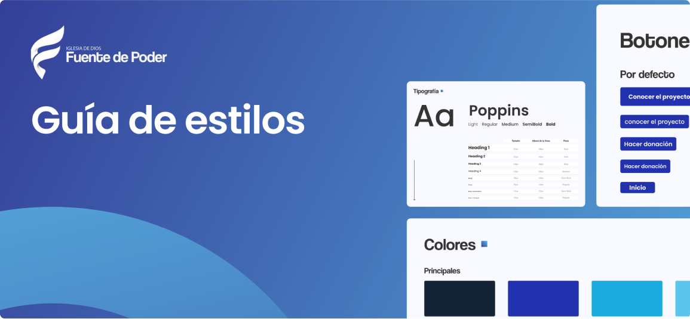

Web - Iglesia fuente de poder
Guía de estilos
Acerca del proyecto
La iglesia “Funte de poder” desarrollaba sus actividades de manera presencial en su lugar de reunión habitual, pero con la situación actual que se vive en el mundo, todo se comenzó a virtualizar y con ello los servicios de la iglesia. Esta será una web que permita conocer los medios por los cuales se pueden hacer donaciones a la iglesia para su proyecto de reconstrucción y conocer los detalles del mismo.
Mi rol consistió en crear una guía de estilos y aplicarla en la creacion de los Mockups de alta fidelidad.
Tipografía
Se difinió que la web será para un publico variado, con distintos gustos y diferentes edades, por lo que se escogió una tipografia san serif, elegante y simple, con el fin de que sea legible por todos los usuarios en sus distintas escalas.
Esta tipografía está disponible de forma gratuita en Google fonts.
Paleta de colores
La elección de los colores se hizo en base al isologotipo de la iglesia, tomando sus colores principales y sus distintas intensidades. Eso con el fin de seguir una misma linea entre su identidad grafica y lo que será la web.
Botones
Los botones en sus diferentes escalas, tanto para movil como para escritorio.


© 2021 Miguel Ruz